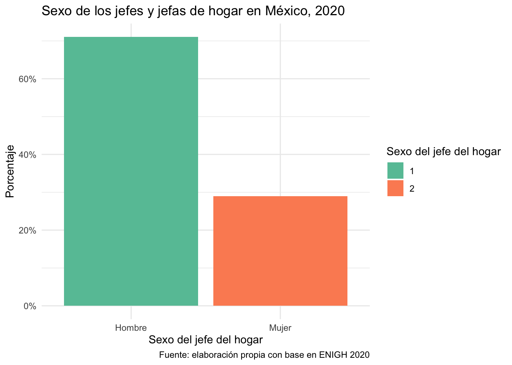

#Paquetería #
if(!require("pacman")) install.packages("pacman")Loading required package: pacmanpacman::p_load(tidyverse, readxl, writexl, haven, sjlabelled, foreign, janitor, esquisse, RColorBrewer, wesanderson)#Paquetería #
if(!require("pacman")) install.packages("pacman")Loading required package: pacmanpacman::p_load(tidyverse, readxl, writexl, haven, sjlabelled, foreign, janitor, esquisse, RColorBrewer, wesanderson)#Importar #
concentrado2020 <- haven::read_dta("datos/concentrado2020.dta")Los gráficos más utilizados son los gráficos de barras. Primero vamos a hacer nuestro primer gráfico de barras o columnas.
Al igual que en la sesión anterior, vamos agregando capas a nuestros gráficos.
En los datos incluiremos la variable que queremos graficar, en este caso la jefatura de hogar. Lo guardaremos como un objeto.
g<- concentrado2020 %>%
ggplot(aes(x=sexo_jefe))
gVemos que graficamos nuestra variable, sin embargo, todavía no hemos especificado la geometría así que la vamos a agregar.
g+geom_bar()También podemos voltear nuestras barras.
g +
geom_bar()+
coord_flip()Aunque, se ve mejor como estaba antes.
Para hacer nuestra gráfica de barras y que se vean las etiquetas con facilidad, vamos a etiquetar nuestra variable.
etiqueta_sex<-c("Hombre", "Mujer")
concentrado2020<-concentrado2020 %>%
mutate(sexo_jefe=as_numeric(sexo_jefe)) %>% # para quitar el "string"
sjlabelled::set_labels(sexo_jefe, labels=etiqueta_sex) Ahora sí podemos ver las etiquetas en nuestro gráfico
g<-concentrado2020 %>%
ggplot(aes(x=as_label(sexo_jefe))) +
geom_bar()
gVamos a ponerle un color a hombre y otro a mujer y a quitar el fondo gris.
Opción 1. Ponerle color manualmente
g<- concentrado2020 %>%
ggplot(aes(x = as_label(sexo_jefe), fill = as.factor(sexo_jefe))) + #debo rellenar como as.factor, ya que si no hubiera tratado a la variable como continua.
geom_bar()
gEsos son los colores por default. Ahora especificamos los colores.
g + scale_fill_manual(
values = c("1" = "cadetblue4",
"2" = "chartreuse4")
) +
theme_minimal()g +
scale_fill_brewer(palette="Set2") +
theme_minimal()Opción 3. Ponerle color con Wesanderson.
pal <- wes_palette(2, name = "Royal1", type = "discrete")
g +
scale_fill_manual(values=pal) +
theme_minimal()Pero, no queremos el conteo, sino los porcentajes
g<- concentrado2020 %>%
ggplot(aes(as_label(sexo_jefe), fill = as.factor(sexo_jefe))) +
geom_bar(aes(y = (..count..)/sum(..count..))) +
scale_y_continuous(labels=scales::percent) +
theme_minimal()
gAl gráfico de porcentajes, le agregaremos el color.
g +
scale_fill_brewer(palette="Set2") Ahora, le agregamos los títulos
g +
scale_fill_brewer(palette="Set2") +
labs(
x = "Sexo del jefe del hogar",
y = "Porcentaje",
title = "Sexo de los jefes y jefas de hogar en México, 2020",
caption = "Fuente: elaboración propia con base en ENIGH 2020",
fill = "Sexo del jefe del hogar"
)
Y detalles en la fuente de los títulos.
concentrado2020 %>%
ggplot(aes(as_label(sexo_jefe), fill = as.factor(sexo_jefe))) +
geom_bar(aes(y = (..count..)/sum(..count..))) +
scale_y_continuous(labels=scales::percent) +
scale_fill_brewer(palette="Set2") +
labs(x = "Sexo del jefe del hogar",
y = "Porcentaje",
title = "Sexo de los jefes y jefas de hogar en México, 2020",
caption = "Fuente: elaboración propia con base en ENIGH 2020",
fill = "Sexo del jefe del hogar") +
theme_minimal()+
theme(plot.title = element_text(color = "black", size = 14, face = "bold"),
plot.caption = element_text(face = "italic"))Por último, agregaremos las etiquetas de nuestros datos.
concentrado2020 %>%
count(sexo_jefe) %>%
mutate(pct = prop.table(n)) %>%
ggplot(aes(x = as_label(sexo_jefe), y = pct, fill = as.factor(sexo_jefe))) +
geom_col(position = 'dodge') +
scale_y_continuous(labels = scales::percent) +
scale_fill_brewer(palette="Set2") +
theme_classic()+
geom_text(aes(label = round(pct*100)),
vjust = -0.2,
size = 3,
colour = "black") +
labs(
x = "Sexo del jefe del hogar",
y = "Porcentaje",
title = "Sexo de los jefes y jefas de hogar en México, 2020",
caption = "Fuente: elaboración propia con base en ENIGH 2020",
fill = "Sexo del jefe del hogar"
) +
theme(
plot.title = element_text(color = "black", size = 14, face = "bold"),
plot.caption = element_text(face = "italic")
)Escoge una variable cualitativa y elabora tu gráfico.